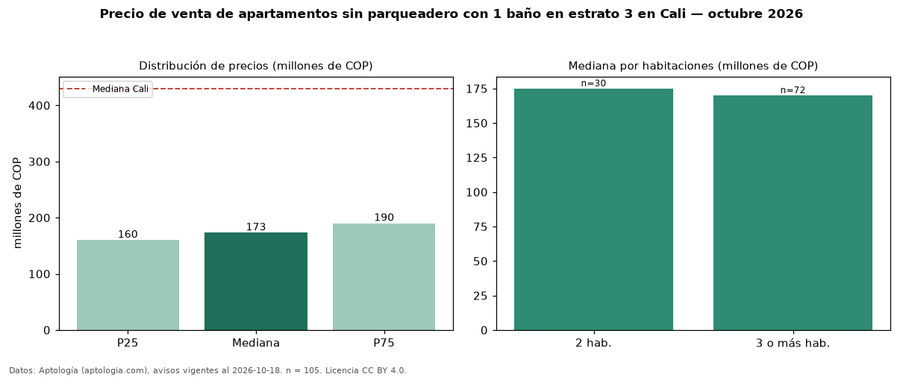

Precio de venta de apartamentos sin parqueadero con 1 baño en estrato 3 en Cali — octubre 2026
En Cali, la mediana de precio de venta de apartamentos sin parqueadero con 1 baño en estrato 3 es COP 173 millones, según 105 avisos vigentes. Eso es 5 % menos que la mediana de los apartamentos sin parqueadero en estrato 3 en venta de Cali (COP 182 millones, n = 219); este segmento reúne el 48 % de esos avisos. Por metro cuadrado, la mediana es COP 3,27 millones/m² (n = 101), 4 % por debajo de los apartamentos sin parqueadero en estrato 3 en venta de Cali (COP 3,41 millones/m²). El área mediana anunciada es 54 m². El segmento con más oferta es el de 3 o más habitaciones (72 avisos, mediana COP 170 millones); pasar de 2 habitaciones a 3 o más habitaciones cambia la mediana −3 %. La administración mediana declarada es COP 188.000 al mes (n = 65). La mediana de todos los apartamentos en venta de Cali es COP 430 millones (−60 % de diferencia). La mitad central de los avisos va de COP 160 millones a COP 190 millones (razón 1,2), una dispersión baja. Datos: Aptología (aptologia.com), CC BY 4.0 — https://www.aptologia.com/venta/cali. Archivos: PDF, CSV con las cifras y gráfica PNG.

| Avisos únicos | 105 |
|---|---|
| Percentil 25 | COP 160.000.000 |
| Mediana | COP 173.000.000 |
| Percentil 75 | COP 190.000.000 |
| Mediana por m² | COP 3.272.727 |
Fuente: avisos vigentes de portales inmobiliarios recopilados por Aptología, deduplicados (mínimo 30 avisos únicos por celda). Precios pedidos, no cerrados. Fecha: 2026-10-18.